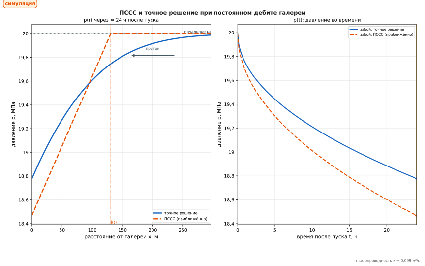

Стр. 496 · §1. Метод последовательной смены стационарных состояний
Следовательно, формула для распределения давления в пласте (24.1) будет иметь вид
Неустановившееся движение упругой жидкости в упругом пласте. Метод ПСССШаг 50 из 60
В книге: «Метод последовательной смены стационарных состояний» стр. 496
Опирается на: шаг 49 «Фронт давления растёт как корень» (предпосылка), шаг 29 «Дальняя граница даёт давление галереи» (предпосылка), шаг 60 «Где ПССС точен, а где груб» (переход к данным)
При постоянном дебите давление по ПССС линейно внутри зоны длиной √(2κt), а за ней равно pк.
Депрессия на галерее по ПССС отличается от точного расчёта: погрешность составляет 25%.
Поэтому результат ПССС — оценка, его сверяют с точной формулой.
Пороговая идея. Правильно выбирать ветвь профиля и показатель сравнения. модель
Автор подставляет длину зоны l(t) = √(2κt) в линейный профиль (24.1). Получается формула (24.7). Она действует от галереи до границы включительно: 0 ≤ x ≤ √(2κt). стр. 496
«$$p(x, t) = p_{\mathrm{k}} - \frac{Q \mu}{kBh} (\sqrt{2\kappa t} - x), \quad 0 \leq x \leq \sqrt{2\kappa t}, \quad (24.7)$$»
Дальше границы возмущения давление принимают равным начальному. При x > √(2κt) давление p = pк. Значит, точка за фронтом ещё не чувствует отбора. стр. 496
«$$p(x, t) = p_{\mathrm{k}}, \quad x > \sqrt{2\kappa t}.$$»
Автор сравнивает депрессию pк − pг по формуле (24.7) с точной формулой (24.39). Значения значительно отличаются: погрешность составляет 25%. Эта погрешность относится к депрессии на галерее, а не ко всем точкам поля. стр. 496
«Значения депрессии $p_{\mathrm{k}} - p_{\mathrm{r}}$ по приближенной формуле (24.7) значительно отличаются от данных расчета по точной формуле (24.39): погрешность составляет 25%.»
Сначала найдите длину зоны для нужного момента. Затем решите, в какой ветви лежит точка. Депрессию по ПССС не считайте точной: сравните её с точным расчётом. стр. 496

Как прочитать давление по ПССС
Условие. Прямолинейно-параллельный поток к галерее с постоянным дебитом.
Итог. Погрешность депрессии составляет 25%.
Какую ветвь профиля брать и можно ли верить депрессии
При x ≤ √(2κt) давление считают по (24.7), при x > √(2κt) оно равно pк. Депрессия по ПССС при постоянном дебите отличается от точной на 25%. стр. 496
Специалист выбирает ветвь по положению точки и использует депрессию ПССС как оценку, сверяя её с точной формулой (24.39).
Дано: Точка лежит дальше фронта: x > √(2κt). (модель)
За границей возмущения давление принимают равным начальному.
Дано: Точка лежит между галереей и фронтом: 0 ≤ x ≤ √(2κt). (модель)
Внутри зоны действует линейный профиль (24.7).
Дано: Депрессию pк − pг на галерее при постоянном дебите посчитали по (24.7) и сравнили с точной формулой (24.39). (Разобранный пример, стр. 496)
Автор сообщает погрешность депрессии 25%.
Ветвь давления внутри затронутой зоны. стр. 496
| Обозначение | Что это | Единицы |
|---|---|---|
| $p$ | пластовое давление в рассматриваемой точке | Па |
| $x$ | расстояние до галереи | м |
| $t$ | время с начала отбора; dt — его малое приращение | с |
| $p_{\mathrm{k}}$ | начальное давление в пласте и давление на границе возмущения | Па |
| $Q$ | объёмный дебит жидкости | м³/с |
| $\mu$ | динамическая вязкость жидкости | Па·с |
| $k$ | проницаемость пласта | м² |
| $B$ | ширина пласта | м |
| $h$ | толщина пласта | м |
| $\kappa$ | коэффициент пьезопроводности | м²/с |
Неизменное давление за фронтом. стр. 496
| Обозначение | Что это | Единицы |
|---|---|---|
| $p$ | пластовое давление в рассматриваемой точке | Па |
| $x$ | расстояние до галереи | м |
| $t$ | время с начала отбора; dt — его малое приращение | с |
| $p_{\mathrm{k}}$ | начальное давление в пласте и давление на границе возмущения | Па |
| $\kappa$ | коэффициент пьезопроводности | м²/с |
Для расчёта «Как читать давление и оценить ошибку при постоянном дебите» отделите исходные параметры от модельных выходов.
Разные метрики одной модели могут давать разные ошибки валидации.
Где аналогия перестаёт работать: Оценка дана для конкретной постановки, а не для произвольной выборки.
Показывайте погрешность с подписью рассчитываемой величины и режима.
Заполните пропуск о давлении за фронтом.
При x > √(2κt) давление p = .
Верный ответ: При x > √(2κt) давление p = [pк].
За границей возмущения давление принимают равным начальному. Где это в тексте (стр. 496) →
%
Верный ответ: 25 %
Автор сравнил (24.7) с точной формулой (24.39) и получил 25%. Где это в тексте (стр. 496) →
Все утверждения шага с дословной цитатой автора и страницей книги (по PDF).
Внутри зоны ПССС использует линейный профиль с l(t) по (24.6), включая галерею и границу. вывод
«$$p(x, t) = p_{\mathrm{k}} - \frac{Q \mu}{kBh} (\sqrt{2\kappa t} - x), \quad 0 \leq x \leq \sqrt{2\kappa t}, \quad (24.7)$$»
Дальше границы возмущения давление принимается равным начальному. вывод
«$$p(x, t) = p_{\mathrm{k}}, \quad x > \sqrt{2\kappa t}.$$»
Для заданного дебита ошибка депрессии по (24.7) относительно точной формулы (24.39) составляет 25%. наблюдение
«Значения депрессии $p_{\mathrm{k}} - p_{\mathrm{r}}$ по приближенной формуле (24.7) значительно отличаются от данных расчета по точной формуле (24.39): погрешность составляет 25%.»
Стр. 496 · §1. Метод последовательной смены стационарных состояний
Следовательно, формула для распределения давления в пласте (24.1) будет иметь вид
Стр. 496 · §1. Метод последовательной смены стационарных состояний
$$p(x, t) = p_{\mathrm{k}} - \frac{Q \mu}{kBh} (\sqrt{2\kappa t} - x), \quad 0 \leq x \leq \sqrt{2\kappa t}, \quad (24.7)$$
Стр. 496 · §1. Метод последовательной смены стационарных состояний
$$p(x, t) = p_{\mathrm{k}}, \quad x > \sqrt{2\kappa t}.$$
Стр. 496 · §1. Метод последовательной смены стационарных состояний
Значения депрессии $p_{\mathrm{k}} - p_{\mathrm{r}}$ по приближенной формуле (24.7) значительно отличаются от данных расчета по точной формуле (24.39): погрешность составляет 25%.
На этот шаг опираются: шаг 60 «Где ПССС точен, а где груб».
Давление у галереи и ошибка ПССС
Ссылки в ответе ведут к исходному тексту.